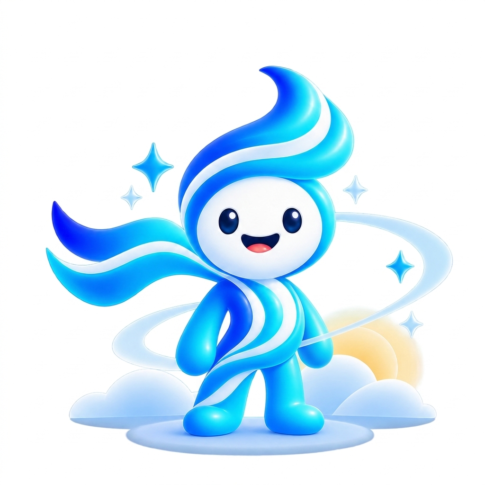
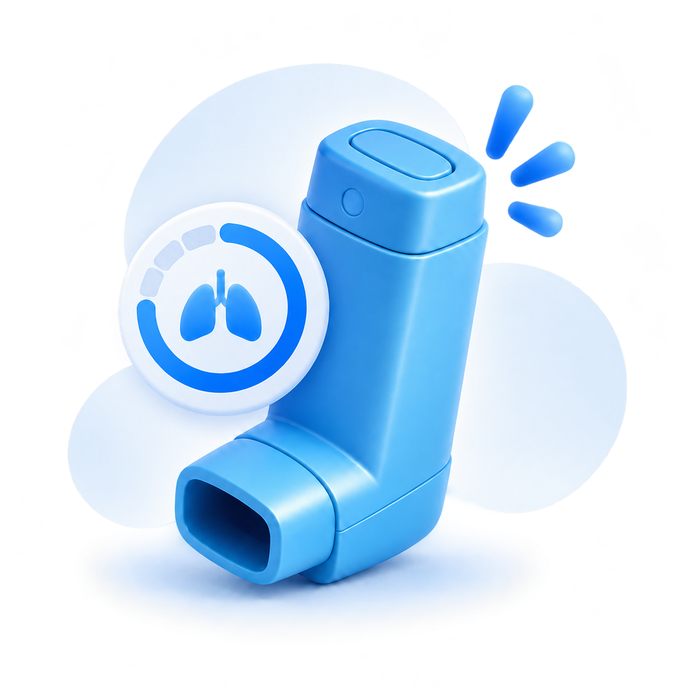
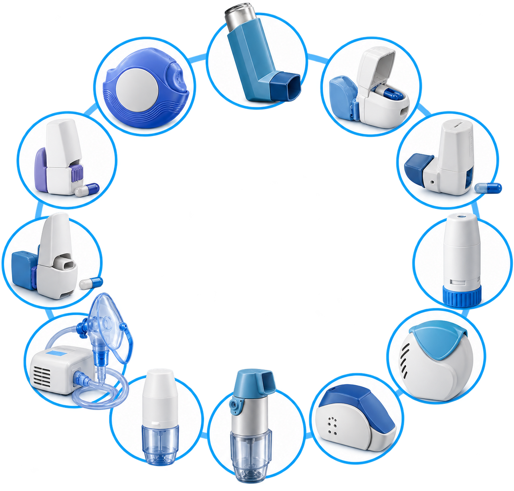

Proteção que evita as crises antes que comecem
Trata a inflamação silenciosa dos brônquios todos os dias. No app, seus horários aparecem como selos no horizonte solar e lunar, com cálculo automático de dias restantes no frasco.
Somos a healthtech que transforma o cuidado respiratório em uma jornada leve, visual e sem burocracia. Configure sua bombinha em menos de 1 minuto, acompanhe doses no horizonte do céu e leve relatórios clínicos impecáveis ao seu médico.

"Ar limpo e rotina em dia! Toque no orbe de Clenil no celular ao lado para testar o registro da dose das 20:00."
0 de 1 dias com todas as doses
A asma afeta milhões de brasileiros, mas a maioria das crises acontece por dois motivos evitáveis: esquecer a medicação preventiva quando os sintomas somem ou descobrir tarde demais que o frasco da bombinha acabou.
Na InspirAção, rejeitamos interfaces hospitalares frias, tabelas confusas e alertas punitivos. Criamos um ecossistema digital guiado pela filosofia Bruma Viva & Ventu Respiratório: um ambiente sereno que reduz a ansiedade durante uma crise e celebra cada dia de prevenção concluído.
Nosso aplicativo funciona 100% offline desde o primeiro segundo. O paciente ou cuidador abre o app, aponta a câmera para a caixa do inalador e já tem seu plano diário montado no horizonte do céu.
Muitos pacientes confundem o inalador de uso diário com o de resgate rápido. No InspirAção, cada terapia tem sua identidade cromática, ícone e comportamento no Céu:

Trata a inflamação silenciosa dos brônquios todos os dias. No app, seus horários aparecem como selos no horizonte solar e lunar, com cálculo automático de dias restantes no frasco.
Sem alarmes desnecessários: fica sempre acessível como um orbe satélite de prontidão. Ao registrar um uso de alívio, o app grava o minuto exato e acompanha como a crise terminou.
Suporte completo para pacientes em tratamento com imunobiológicos injetáveis ou protocolo MART (mesmo inalador para manutenção e alívio com contabilidade separada).
Cada tela do InspirAção foi projetada para eliminar atritos: de orbes líquidos que mostram se o remédio está acabando até guias visuais de técnica inalatória.
A maioria dos inaladores pressurizados não possui contador numérico na embalagem. No Plano de Ação do InspirAção, seus medicamentos flutuam em um céu vivo onde o nível do líquido dentro de cada orbe mostra exatamente a fração de doses restantes no frasco.
Sem digitar nomes farmacêuticos difíceis. O scanner valida o código de barras EAN/GTIN direto na base oficial da ANVISA/CMED e preenche princípio ativo, dosagem, laboratório e quantidade de jatos do frasco.

Até 70% dos pacientes cometem pequenos erros na hora de disparar o spray. A aba Aprender traz guias diretos sobre postura, tempo de pausa inspiratória, uso de espaçador, higiene do bocal e sinais de alerta para procurar o pronto-socorro.
Responda mensalmente às 5 perguntas clínicas padronizadas (adaptadas automaticamente para menores de 12 anos ou adultos), acompanhe sua pontuação de 5 a 25 pontos e compartilhe tudo com seu médico em PDF.
Espírito do ar e da respiração livre. Faça uma pausa de 4 segundos comigo ou explore minhas expressões ao lado!
Inspirado nos melhores aplicativos de bem-estar do mundo (como Gentler Streak), o Ventu acompanha o ritmo biológico do paciente no Céu de 24h. Ele reduz a ansiedade nos momentos de falta de ar, explica conceitos clínicos com leveza e festeja suas conquistas de adesão.
👇 Clique nas expressões canônicas do Ventu para interagir:
Quando o médico pergunta "Quantas vezes você precisou da bombinha de alívio nos últimos 3 meses?", o InspirAção entrega a resposta exata em um documento PDF A4 de múltiplas páginas gerado no próprio aparelho.
O tratamento da asma é uma maratona diária. Por isso, criamos mecânicas que motivam crianças, jovens e adultos sem jamais gerar ansiedade.
Visualize os últimos 7 dias em uma régua clara. Sete dias de uso contínuo reduzem a inflamação brônquica e desbloqueiam a conquista Hábito Cristalino.
Esqueceu uma dose em um dia corrido? Em vez de zerar toda a sua sequência e desmotivar você, um Escudo do Ar é ativado automaticamente para preservar seu histórico.
Selos e níveis celebram sua dedicação ao plano prescrito pelo médico:
Tudo o que pacientes, pais, cuidadores e profissionais de saúde precisam saber.
Estamos liberando o acesso antecipado do InspirAção para um grupo exclusivo de testadores. Deixe seu e-mail abaixo para cadastrarmos seu convite no teste fechado: